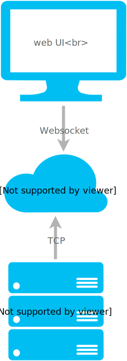

adm ← shhh that is not the real name yet
Custom and dynamic admin interface
You run agents on your infrastructure. They connect via secure TCP to the hosted service.
They are able to present lists views, detail views, and perform actions through a nice clean web UI.
Why would I need it?
- a non-tech person needs to perform tasks that are usually only accessible via command line
- a tech person wants to access data and perform tasks in a safe, easy, audited way
- you want all your data and admin tasks available from one place
- you can't justify building a UI
Example use cases:
- provide buttons to clear a cache inside your app
- present a simple way to browse/edit your database
- embed as a lib inside your app, and show currently connected users
- store useful SQL/db queries so anyone can run them
- present a simple UI for an API
- run a script on a remote box
Try it →
Architecture
Server accepts websocket connections from browser, and TCP connections
from agent runner. Both secured with TLS.
I run server, you run agent runner.

Configuration
Uses toml.
[runner]
id = "runner-1"
name = "My First Runner"
host = "adm.nicksellen.co.uk"
port = 8000
account = "test"
keys = [
"a369829c7258e63dc0164e3369f12637fda869fe",
]
[my-first-agent]
name = "My First Agent"
type = "example"
Roadmap / Status
It's very new, I just made it. It's only a proof-of-concept for now.
I didn't even give it a name or buy a domain for it.
Things it might do one day:
- present information other than lists and details - graphs, images, etc
- create custom panels with your favourite views
- auto-refresh content
- provide a REST API and/or CLI tool
- connect with hosted services via oAuth - no need to run your own agents
I want to see if anybody wants it first.
Hit me up at hello@nicksellen.co.uk
if you're interested!
Try it →
{kind=link}